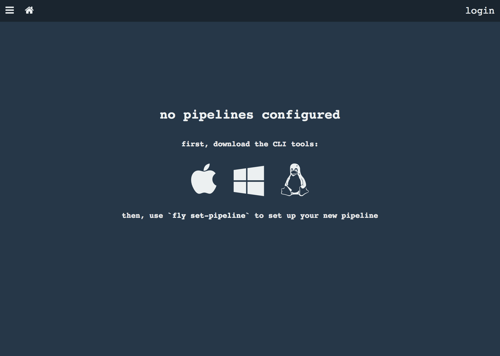
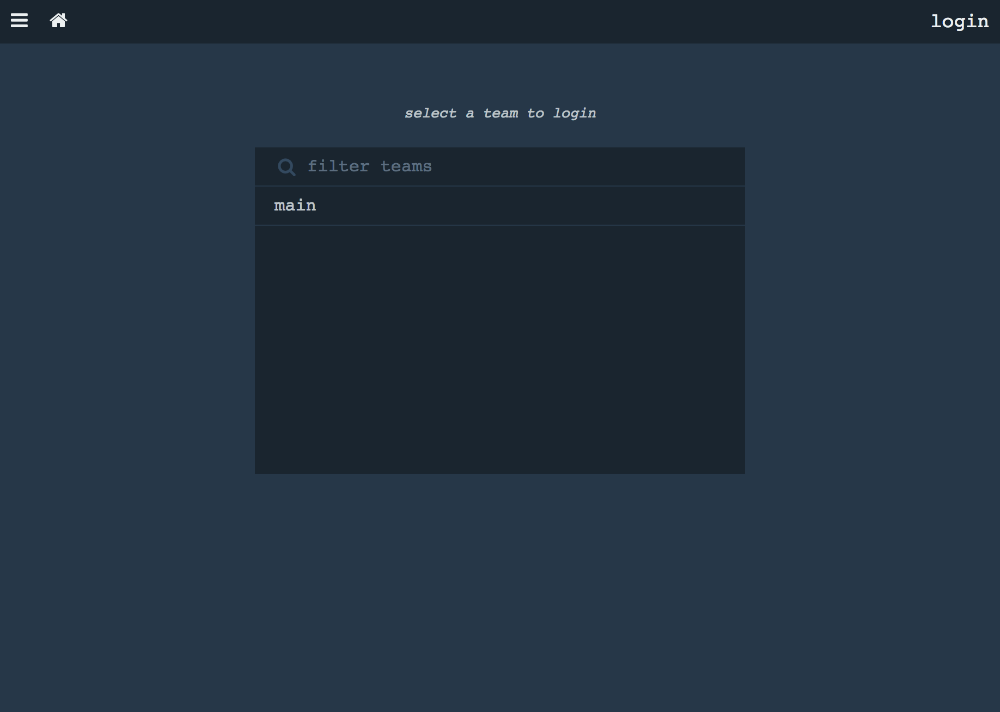
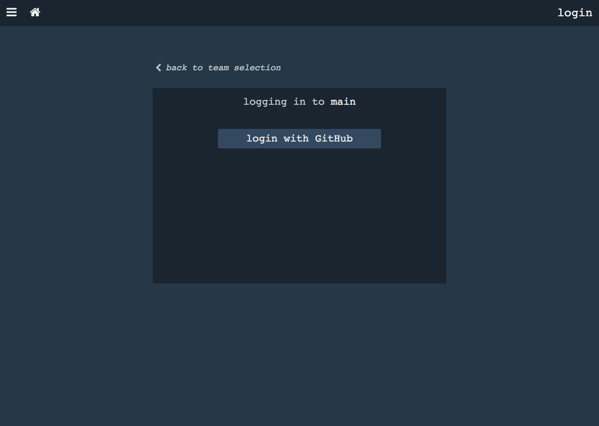
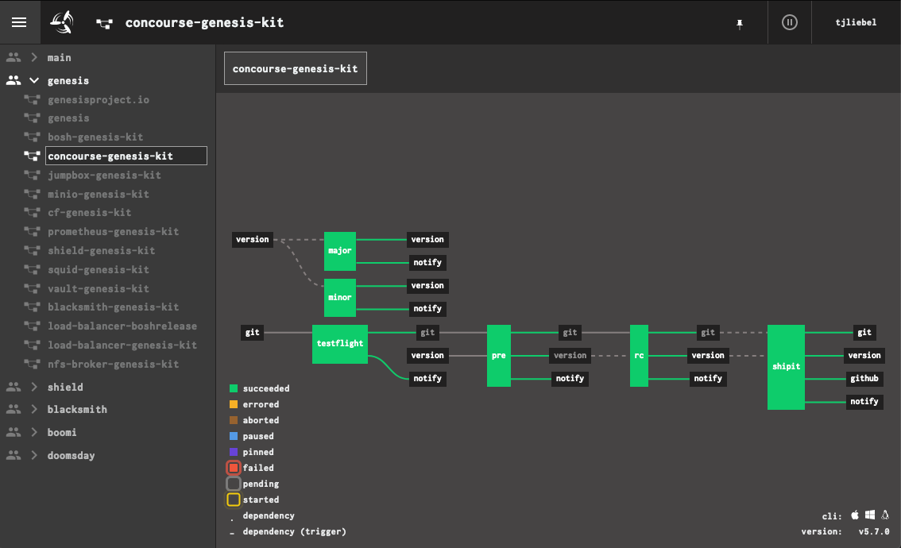
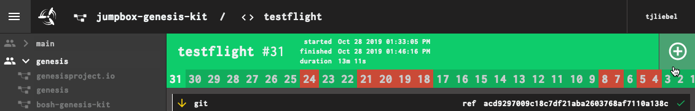
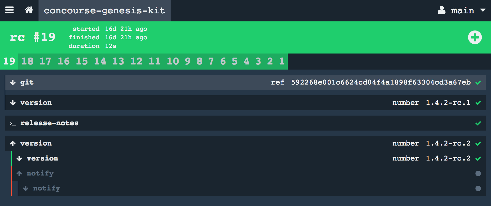

Find Your Concourse Installation
The easiest way to find out the IP address of your Concourse is to interrogate BOSH for the deployment VM IPs:
$ bosh -d your-concourse vms
Using environment 'https://10.0.0.4' as client 'admin'
Task 5929. Done
Deployment 'your-concourse'
Instance Process State AZ IPs VM CID VM Type
db/99da7876-bbb6-45ba-a3f2-c47773bbaa8d running z1 10.0.2.0 vm-29139deb-7f04-4829-ade9-5cc650ea6557 small
haproxy/257059b8-f995-4725-b494-32d22adf0fcc running z1 10.0.2.2 vm-c0afb5b1-1972-4135-98de-1912d4285a92 small
web/207ce2a1-65d0-4988-b62e-f7246190cdd5 running z1 10.0.2.3 vm-73caf2a9-aac3-4635-b3e7-3fa628af415d small
worker/7cfecc9b-d9ab-4659-8356-84ab331e2bb4 running z1 10.0.2.1 vm-9965eb20-c6f6-4f16-ad7c-359645b8f598 runtime
worker/ac17d59e-d03d-43a6-be86-4258c91d146c running z1 10.0.2.11 vm-55badb90-26d2-4d51-8ccb-0b74d25c1cfb runtime
worker/e52c1b40-d893-4828-83d5-20a575a66acd running z1 10.0.2.12 vm-a63c96fd-311f-4896-90ca-58c153d72c38 runtime
6 vms
Succeeded
The haproxy instance is the one terminating inbound API access,
so that’s the IP we care about.
Log Into Concourse
To log into concourse from the browser, simply open up the web UI (either by name, if you have DNS hooked up to the Concourse haproxy instance, or by IP).

Then, select your Concourse team:

(you probably only have a main team).
For Github authentication, click the login with Github button.

The first time you do this, you will need to authorize the Github endpoint to access your account information. On subsequent authentication attempts, it should be seamless.
To log in from the command-line, you’ll need to have fly
installed.
First, tell fly where your Concourse is:
$ fly -t my-ci login -c https://$IP -k
logging in to team 'main'
navigate to the following URL in your browser:
https://$IP/auth/github?team_name=main&fly_local_port=$SOME_PORT
or enter token manually:
If you are executing fly from the same machine that runs your
browser instance, you can just visit the link and the Concourse
server will communicate to the fly process through the browser.
If you are running fly on a jumpbox or bastion host, the port
connection won’t be properly wired up (your browser can’t
communicate with the jumpbox instance of fly). You can either
omit the trailing &fly_local_port=... on the URL you put in the
browser, or leave it and let it fail. In either case, the browser
will display a bearer token that looks like this:
Bearer
eyJhbGciOiJSUzI1NiIsInR5cCI6IkpXVCJ9.eyJjc3JmIjoiZjhkZTEzYzUxMTAzYWYyNTMzN
WE3MGE3ZGQwNzdlYzUxMGQxMzA2ZjlhNGZkZGZmNzAwOGEwMzU4YzQwYzAwOSIsImV4cCI6MTU
yMjE3MDU1OCwiaXNBZG1pbiI6dHJ1ZSwidGVhbU5hbWUiOiJtYWluIn0.cbhjKKzDr7V0UjpuA
F0yrpr7VFdc7baKH8gJ1w5WaLYpy0oeUjdgMPbM9Th04OsOWMKxAi6yQcHDj6mWDlKNaqjJrkn
yMjE3MDU1OCwiaXNBZG1pbiI6dHJ1ZSwidGVhbU5hbWUiOiJtYWluIn0.cbhjKKzDr7V0UjpuA
F0yrpr7VFdc7baKH8gJ1w5WaLYpy0oeUjdgMPbM9Th04OsOWMKxAi6yQcHDj6mWDlKNaqjJrkn
4lqHk3NcudKUW-qxJatQf49iIDcIyJK4isX2qRiQMYGXEY44m3etbDd2VGoLMDsNNrUE-JHL73
OS42qZJAD-hNz2jl8zxPek8md-oRA
(newlines added for clarity)
You must copy the entire string, including the "Bearer " prefix, into the waiting prompt in terminal.
Use fly targets to verify:
fly targets
name url team expiry
my-ci https://.../? main Tue, 19 Dec 2017 17:09:18 UTC
Your real IP / domain name shoud show up in the output.
From now on, all of your fly commands will need the -t my-ci
option, to target correctly.
Install fly, The Concourse CLI
If you have access to a browser, you can visit the Concourse URL
and download the correct fly binary for your platform, by
clicking on one of the icons on the main page:
For Linux jumpbox and bastion hosts, you can also use curl to
download the Linux binary directly:
$ curl -Lo ~/bin/fly \
'https://$IP/api/v1/cli?arch=amd64&platform=linux'
$ chmod 0755 ~/bin/fly
The quotes on the URL are important, to keep your shell from
backgrounding the first part (up to the &) of the command.
This also assumes you have a ~/bin folder (you should) and that
it is in your $PATH (it should be). If necessary, add this to
your ~/.bashrc:
export PATH=$PATH:~/bin
You can verify that fly is working by running fly -h.
As you upgrade Concourse, you will also need to update your local
copy of fly. Assuming you have logged into Concourse, you can
easily update by running:
$ fly -t my-ci sync
This will contact the targeted Concourse (my-ci), download a new
fly binary, and overwrite your locally-installed copy.
View Your Pipelines
From a browser, the list of pipelines is accessed via the three-bar icon in the top-left corner of the interface, which shows the sidebar.

Clicking on a pipeline in the sidebar brings up the main page, which has all of the inputs, outputs, and jobs that comprise the workflow.
From the terminal (assuming you have installed fly and are
logged in), you can run:
$ fly -t my-ci pipelines
name paused public
blacksmith-genesis-kit no no
bosh-genesis-kit no no
concourse-genesis-kit no no
jumpbox-genesis-kit no no
shield-genesis-kit no no
squid-genesis-kit no no
vault-genesis-kit no no
shieldproject.io no no
prometheus-genesis-kit no no
... etc ...
You can list the jobs on a single pipeline as well:
$ fly -t my-ci jobs -p concourse-genesis-kit
name paused status next
testflight no succeeded n/a
rc no succeeded n/a
minor no succeeded n/a
major no n/a n/a
shipit no succeeded n/a
Jobs that have never run have a status of n/a.
List Workers
NOTE: This task requires that fly is installed and that you are
logged in.
To list off all of the workers that have registered with your
Concourse TSA, and their health, use fly workers:
$ fly -t my-ci workers
name containers platform tags team state version
7cfecc9b-e0cd-4f8d-b771-6c26b8782de3 6 linux none none running 1.2
ac17d59e-e92e-4304-a09e-9a5356996296 19 linux none none running 1.2
e52c1b40-1171-464e-89ac-07c60cb09d5d 17 linux none none running 1.2
In sequestered network environments, you will have one contingent of workers for each separate network environment. Those workers will have tags defined that help to partition the overall concourse into zones for purposes of deployment scheduling.
Trigger Pipeline Jobs
From the browser, you can click on the big + icon on any job to
force it to run right now:

From the command-line, you can use fly (assuming it is installed
and you are already logged in).
First, find the pipeline, and inspect its jobs:
$ fly -t my-ci pipelines
$ fly -t my-ci jobs -p my-pipeline
Then, trigger the pipeline/job:
$ fly -t my-ci trigger -j my-pipeline/my-job
Pause and Unpause Pipelines
If you pause a pipeline, it will not execute, even if one of its inputs triggers it to. This can be useful if you want to make sure Concourse isn’t building software or doing deployments in a chagne blackout window.
You can pause a pipeline from the web UI by clicking on the ⏸ icon next to the pipeline name in the sidebar. Paused pipelines show up with a blue header in the web UI:

To unpause, click the ▶ icon in the sidebar.
To pause a pipeline from the command-line, you will need to
install fly and make sure you are logged in.
$ fly -t my-ci pause-pipeline -p my-pipeline
To unpause:
$ fly -t my-ci unpause-pipeline -p my-pipeline
Note: Genesis always unpauses its pipelines after you repipe them.
Access Check and Task Containers
Concourse has a feature called hijacking or (more politically correct) intercepting, by which an operator can gain a remote shell on a check or task container and poke around.
This is handy for troubleshooting failing pipelines, but the execution is hit or miss. Concourse tends to only keep failed containers around for a brief period of time, to facilitate debugging. Successful containers are destroyed immediately.
Start by finding the job you are interested in:
$ fly -t my-ci pipelines
$ fly -t my-ci jobs -p m-pipeline
Then, specify the pipeline/job in a call to fly hijack:
$ fly -t my-ci hijack -j my-pipeline/testflight
1: build #51, step: git, type: get
2: build #51, step: notify, type: get
3: build #51, step: notify, type: put
4: build #51, step: testflight, type: task
choose a container: 4
root@66d6cd55-345a-4078-7c5e-365c4e650c81:/tmp/build/778af108# ls /
bin boot dev etc home lib lib64 media mnt opt proc root run sbin scratch srv sys tmp usr var
root@66d6cd55-345a-4078-7c5e-365c4e650c81:/tmp/build/778af108# exit
You will note that containers in Concourse are often very bare and stripped
down. For example, in the above container, there is no ping utility.
Fix Broken Workers
A common cause of “drive-by” failures in CI is a misbehaving worker, often caused by an out-of-disk scenario. In these cases, the easiest recourse is to forcibly recreate the workers via BOSH.
Workers have no persistent state. All of the interesting bits of Concourse are stored in the database node, which does have a persistent disk attached. Deleting and rebuilding workers has no lasting ill effects on a Concourse installation, although it does temporarily reduce capacity. Of course, if your workers are unable to perform, you are already at reduced capacity.
To recreate workers:
$ bosh -e your-env -d your-env-concourse recreate worker
This will redeploy just the worker instance group, assuming the rest of
the Concourse deployment is healthy.
If you operate in a distributed infrastructure with sequestered networks served by workers-only deployments, you will need to target the appropriate environment BOSH director and worker deployment, but the command is otherwise identical.
Determine What Triggered a Job
It can be helpful to know what input triggered a given job to run in a pipeline, especially with deployment pipelines that seem to run for no apparent reason.
Concourse does give you a visual cue, but you have to know to look for it, and what it is. Any input that triggers a job will have a lighter background than the others. It’s subtle, but useful.

Here, even though we have two inputs to this job, it was the git resource that triggered the rc job, not the version.
And now you know.
View Pipeline Configurations
Concourse has a complete manifest that it uses to run your
pipeline. You can use fly to retrieve this manifest.
$ fly -t ci get-pipeline -p name-of-pipeline
This will dump a (probably very large) YAML document, to standard output. This YAML document describes the pipeline, in whole.
Configure a Pipeline
To create a new pipeline, assuming you have already written the YAML definition file (the “manifest”), all you need to do is:
$ fly -t ci set-pipeline -p name-of-pipeline path/to/def.yml
Note: for Genesis deployments, you should refer to the Genesis
runbooks, since genesis actually manages the pipeline
definition, and has first-class support for configuring Concourse
on your behalf.